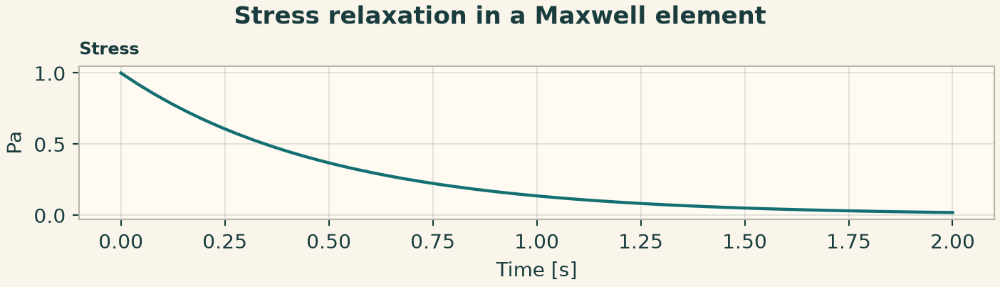
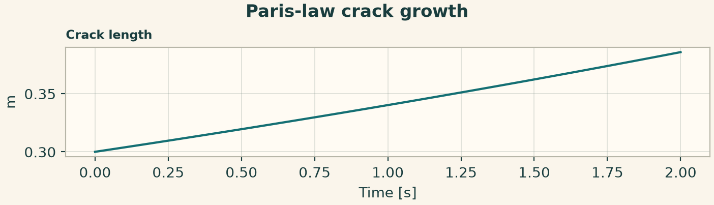
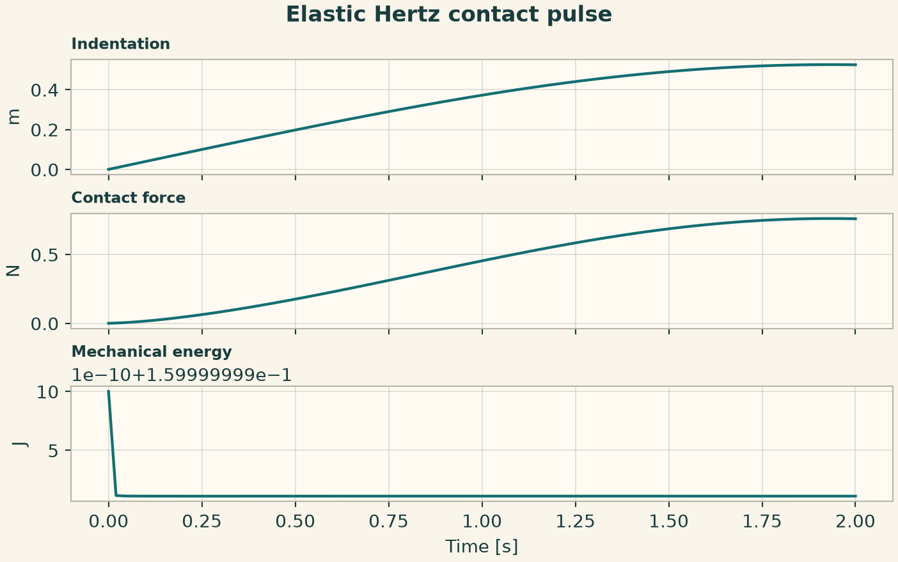
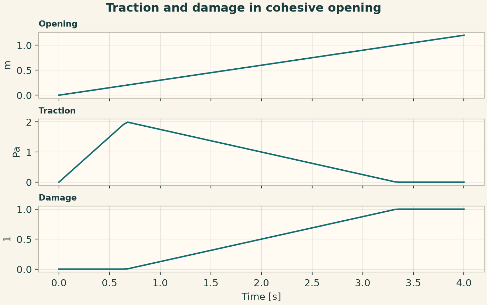

Docs › Worked physics and service recipes › Solid mechanics recipes
6.18 Solid mechanics recipes
6.18.1 Stress relaxation in a Maxwell element
Hold strain rate at zero and initialize stress. The relaxation time equals viscosity divided by Young's modulus.
from onesim.physics.solid_mechanics import MaxwellRelaxation
domain = LumpedDomain()
model = MaxwellRelaxation(
domain=domain.system,
youngs_modulus=4,
viscosity=2,
strain_rate=0,
)
t, data = history_case(
domain,
model,
dict(stress=1.0),
("stress",),
end=2,
dt=0.01,
)
np.testing.assert_allclose(data["stress"], np.exp(-2 * t), atol=1e-7)
fig = history_plot("Stress relaxation in a Maxwell element", model, t, data)
plt.show()

6.18.2 Paris-law crack growth
Use a constant stress range and cycling frequency. At exponent two the stress-intensity law gives exponential crack growth for a fixed geometry factor.
from onesim.physics.solid_mechanics import FatigueCrackGrowth, ParisLaw
domain = LumpedDomain()
model = FatigueCrackGrowth(
domain=domain.system,
stress_range=1,
frequency=2,
growth_law=ParisLaw(coefficient=0.02, exponent=2),
)
t, data = history_case(
domain,
model,
dict(crack_length=0.3),
("crack_length",),
end=2,
dt=0.01,
)
np.testing.assert_allclose(
data["crack_length"], 0.3 * np.exp(0.04 * np.pi * t), atol=1e-9
)
fig = history_plot("Paris-law crack growth", model, t, data)
plt.show()

6.18.3 Elastic Hertz contact pulse
Initialize positive approach velocity at first contact. The force follows positive indentation to the three-halves power and the isolated energy stays nearly constant.
from onesim.physics.solid_mechanics import HertzImpact, HertzContactLaw
domain = LumpedDomain()
model = HertzImpact(
domain=domain.system,
reduced_mass=2,
contact_law=HertzContactLaw(effective_modulus=3, effective_radius=0.25),
)
t, data = history_case(
domain,
model,
dict(indentation=0.0, approach_velocity=0.4),
("indentation", "contact_force", "mechanical_energy"),
end=2,
dt=0.005,
)
np.testing.assert_allclose(
data["contact_force"], 2 * np.maximum(data["indentation"], 0) ** 1.5, atol=1e-10
)
fig = history_plot("Elastic Hertz contact pulse", model, t, data)
plt.show()

6.18.4 Traction and damage in cohesive opening
Drive the opening monotonically through the elastic and softening regimes. The work integral accumulates from the traction and the prescribed opening rate.
from onesim.physics.solid_mechanics import CohesiveOpening, BilinearCohesiveLaw
domain = LumpedDomain()
model = CohesiveOpening(
domain=domain.system,
opening_rate=0.3,
cohesive_law=BilinearCohesiveLaw(
peak_traction=2, onset_opening=0.2, final_opening=1
),
)
t, data = history_case(
domain,
model,
dict(opening=0.0, work_per_area=0.0),
("opening", "traction", "damage"),
end=4,
dt=0.01,
)
assert data["damage"][-1] > data["damage"][0] and data["traction"].max() > 1.9
fig = history_plot("Traction and damage in cohesive opening", model, t, data)
plt.show()
